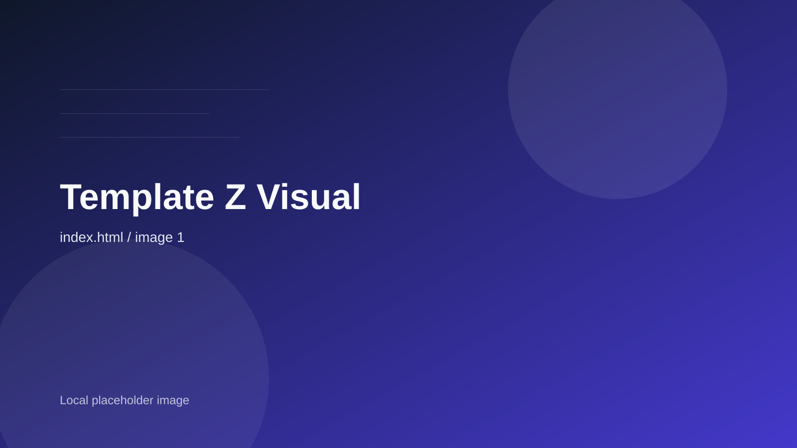

Ichi-go Ichi-e
Findsilence,again.
Let go of noise,touch the essence.Zen Garden offersspace for claritythrough stillness and void.

Still image
The art of stillnessin a modern world.
Ichi-go Ichi-e
Let go of noise,touch the essence.Zen Garden offersspace for claritythrough stillness and void.

Still image
The art of stillnessin a modern world.